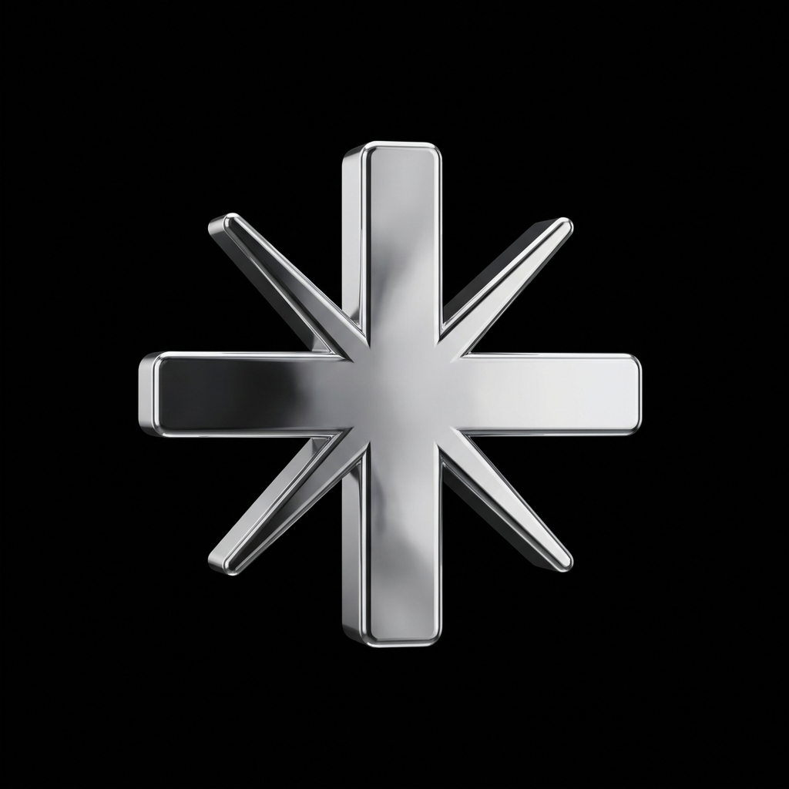
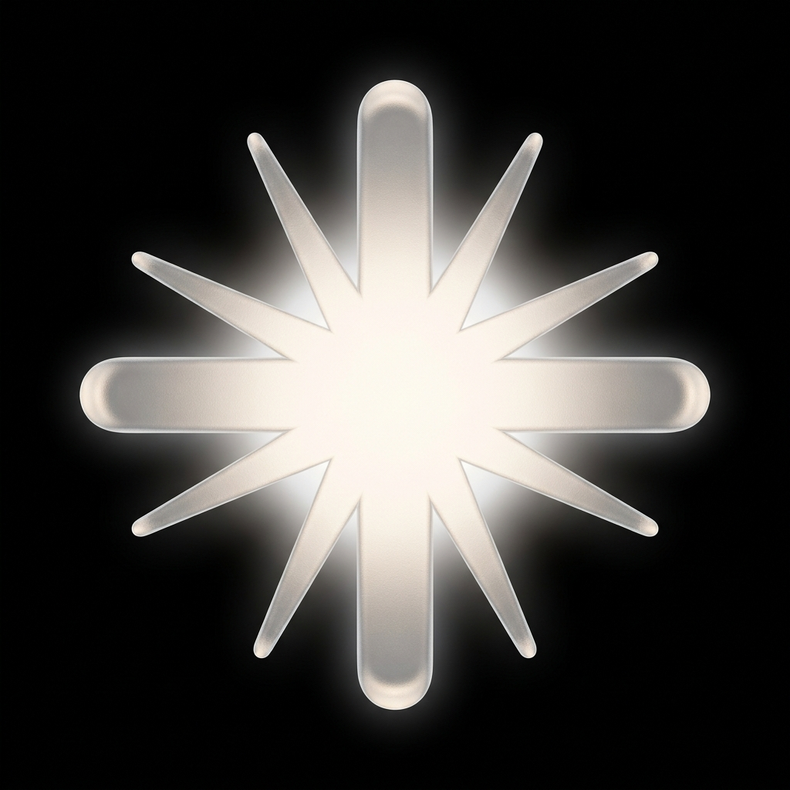
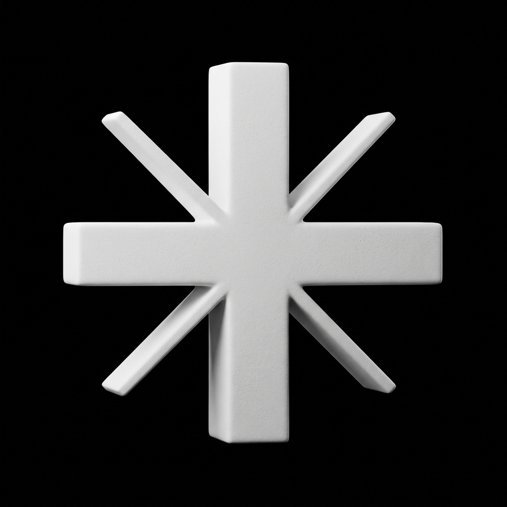
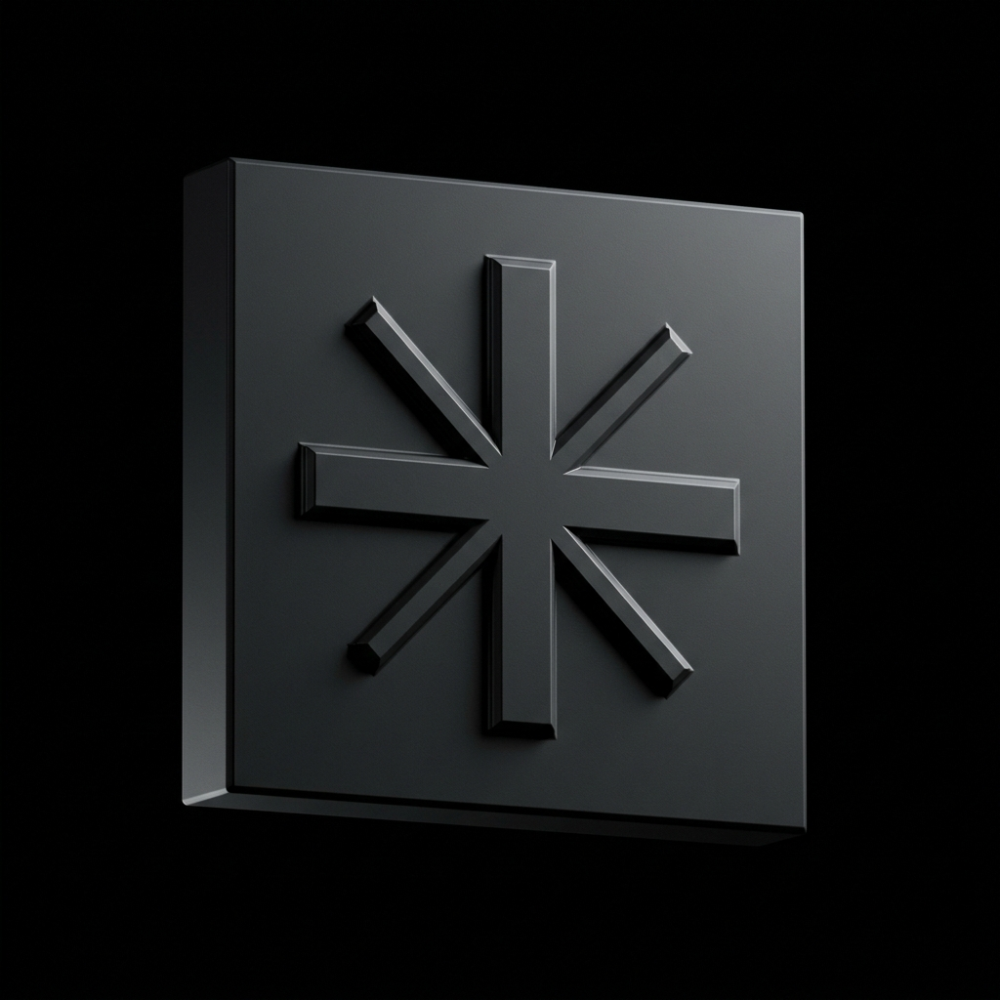

Four material treatments of the same asterisk-star concept. AI-rendered, hyperrealistic, isolated on black. Pick the one with the right vibe and I'll either use the PNG as-is for the favicon + meta image, or trace it back to SVG for the nav (so it scales clean).

Polished mirror chrome with soft reflections. Premium tech / luxury feel. Reads as Apple-product-shot energy.
→ Strongest "premium tech" read

Frosted translucent material with subtle internal glow. iOS 17 / visionOS aesthetic. Soft and approachable.
→ Best if you want "soft AI" vibes

Pure matte white ceramic, diffused studio light, subtle ambient occlusion. Reads as Anthropic / Cursor energy.
→ My top pick — closest to Anthropic logo aesthetic

Carved/raised into a monolithic dark block, dramatic side lighting catches the bevels. Architectural minimalism.
→ Best for "I build by hand" positioning
How this gets used:
The 3D PNG is great for the favicon (where it'll be tiny and the depth reads as detail) and the OG/social share image (large enough to show off the render). For the nav header at 18px, we'd still use the flat SVG so it scales razor-clean. So your final icon is actually a duo: flat SVG for the nav, 3D render for everything else.
My pick: C (Matte Ceramic) — most timeless, closest to Anthropic's design language, won't look dated in 2 years. Chrome (A) is striking now but skews toward 2024 Apple energy. Glass (B) is iOS-y. Embossed (D) is bold but reads more "construction firm" than "AI studio." Let me know which one and I'll wire it in.